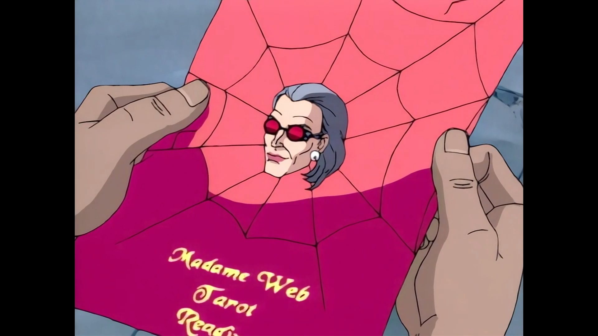

Season three, here we go.
Bob Richardson directed all episodes.
Doctor Strange

"You should take that act to Vegas. All he needs is a couple of tigers." - Spider-Man
Written by: John Semper and Mark Hoffmeier.
Family is a fundamental aspect of any iteration of the Spider-Man story and the season premiere of the third season brings this to the forefront. Mary Jane is kidnapped and Spider-Man is looking for her. After a season of sci-fi horror, we encounter the magic world of Doctor Strange, Wong, Baron Mordo, and Dormammu. This was a great change of pace for the series, an episode where Spider-Man's powers were pretty uneffective in combat. Mary Jane that assumes the protagonism here, dealing with her abusive father's past and being brainwashed because of that. It was a great character arc for Mary Jane to overcome by herself the mind control and break free of her past. This allowed her to be a protagonist and not just a damsel in distress. The episode also introduces Doctor Strange in great fashion, telling us about its story with Mordo through quick and productive flashbacks. The character added a lot to the episode, with Spider-Man's reactions to the world of magic being the humorous highlight here.
Make a Wish
"I am not your enemy, Peter Parker. You are." - Madame Web
Story by: John Semper.
Teleplay by: Mark Hoffmeier, Elliot S. Maggin, and Meg McLaughlin.
text.